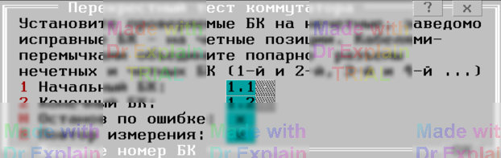

3.13 CROSS. Перекрестный тест коммутатора
Общие сведения
Тест предназначен для поиска лишних подключений точек заданного диапазона БК к измерительным шинам. Перед этим проводят самоконтроль коммутатора, чтобы исключить замыкания, обрывы и несрабатывания в проверяемых БК.
Диапазон проверяемых БК должен содержать чётное число модулей и всегда начинаться с нечетного и заканчиваться чётным номером.
Пары смежных БК (нечетный + четный) последовательно объединяют перемычками по входам «1:1». Каждая пара включает:
- «проверяемый» БК — модуль на нечетной позиции;
- «контрольный» БК — модуль на четной позиции.
В качестве измерителя используется АЦП в режиме омметра:
- перегрузка по R (стабилизация напряжения) — нет связи (разобщение);
- нет перегрузки по R (стабилизация тока) — есть связь (сообщение «брака»).
При «браке» дополнительно усредняют замеры в течение 20 мс и выводят значение сопротивления.
В начале теста появляется меню выбора диапазона БК (см. рисунок 3.14).

Подготовка к проверке
- Перевести коммутатор в режим 4Ш.
- АЦП установить в режим омметра, диапазон 1 кОм.
- Подключить АЦП к шинам + → A1, − → A2 и проверить объединение пар БК.
- Подключить АЦП к шинам + → A1,A2, − → B1,B2 и убедиться в отсутствии коротких.
Алгоритм проверки
Для каждой точки диапазона выполняют следующий цикл:
-
$DEV X.Y.Z на: A1
$DEV Все точки БК A+1 кроме X.Y.Z на A2
Запустить измерение (стабилизация напряжения) и проверить отсутствие связи. -
$DEV Все точки БК A+1 кроме X.Y.Z на B2
Запустить измерение и проверить отсутствие связи. -
$DEV X.Y.Z на: НетШин— отключить точку от A1 перед переходом к следующей.
Такая процедура позволяет локализовать лишние подключения по стабилизации АЦП. После проверки всех точек появляется итоговое меню (см. п. 6.3).